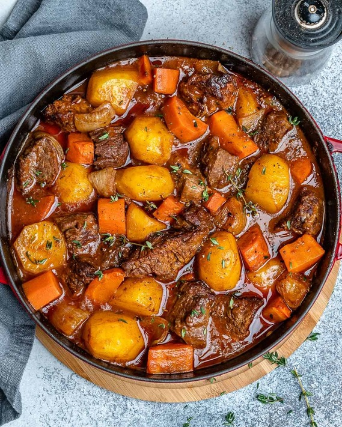

Beef Stew

Description
Beef Stew is the ultimate cold weather comfort food. After a few hours the Beef,Onion,Carrots,Potatoes and Red wine come together in perfect harmony.
Ingredients
- 2 lbs Beef Chuck Roast cut into two inch chunks
- 1 Tsp Salt
- 1 Tsp Ground Pepper
- 2 Tbsp Flour
- 2 Tbsp Olive oil
- 1/2 Yellow onion Finely chopped
- 4 Garlic cloves Minced
- 1 Large Carrot cut into two inch chunks
- 2 Cups Beef Broth
- 1/4 Cup of Tomato Paste
- 1 Tbsp Worcestershire Sauce
- 1 Bay Leaf
Steps
- Preheat oven to 325° F
- Season the beef on all sides with Salt and Pepper. Sprinkle the flour over and toss the seasoned beef to coat
- Heat the olive oil in a large Dutch oven over medium heat. Brown the beef in batches, on all sides, for 3-4 minutes per batch.Transfer the browned beef to a plate and set aside.
- Add the onions, garlic, and carrots to the Dutch oven, and cook, stirring occasionally, for 2-3 minutes, or until slightly browned.
- Add the potatoes, beef broth, tomato paste, bay leaf, thyme, and Worcestershire sauce, and use a wooden spoon to scrape the browned bits from the bottom of the pot.
- Bring the mixture to a simmer, stirring, and return the beef to the pot. Cover the Dutch oven, and transfer to the preheated oven
- Cook the stew for 2-2.5 hours, or until the beef is very tender. Remove the bay leaf. Taste the stew and season with additional salt and pepper, if necessary. Serve warm.